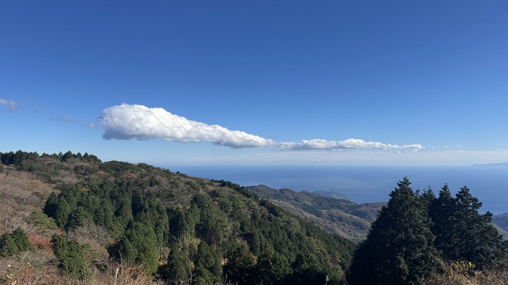
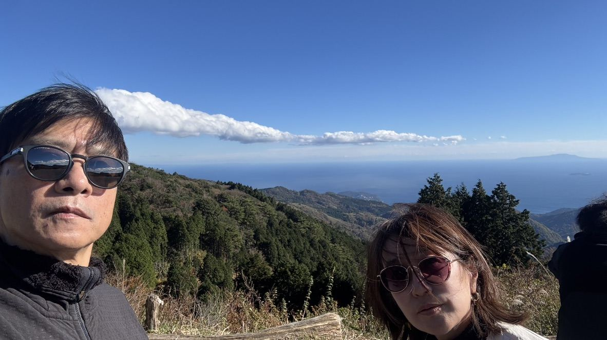
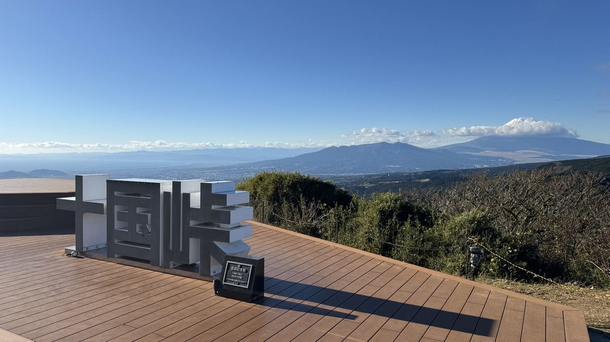
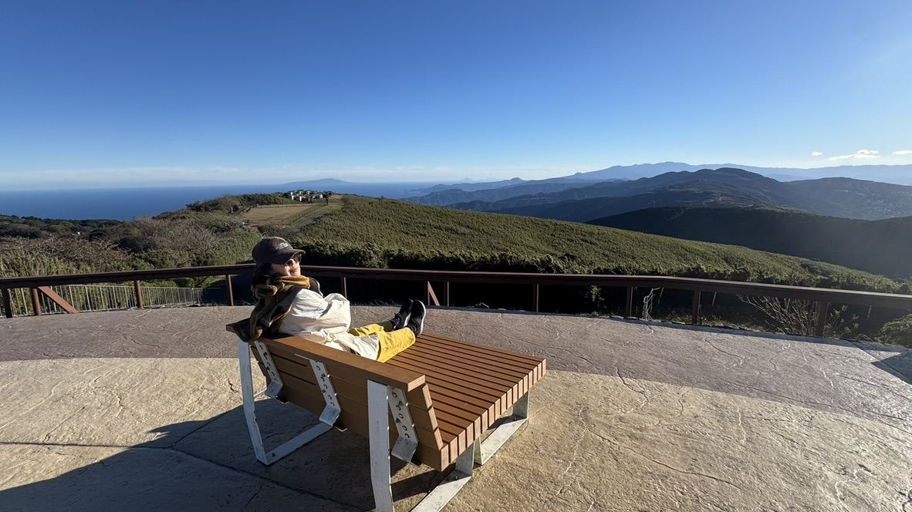
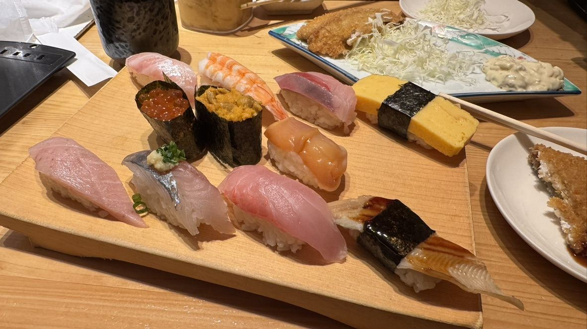

峠の上の富士山
箱根 → 十国峠 → 熱海
箱根の峠の上に出ると、空はどこまでも澄んでいた。眼下には芦ノ湖が横たわり、その向こうに、富士山が静かに座っていた。妻と並んで撮った自撮りは、二人ともまぶしそうに目を細めている。
それから伊豆の付け根の峠まで足をのばした。広いデッキの先に、富士山と山並みが見渡せた。妻はベンチに寝そべるように座って、しばらく空を眺めていた。夕方は熱海に下りて、寿司を食べた。




